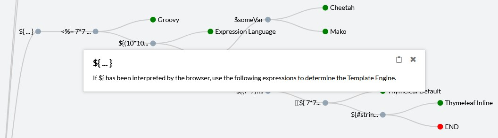

Template Injection Learning Platform
Following Kettles 3-Step Method “Detect-Identify-Exploit” will lead through the Template Injection Vulnerabilities. Here is a Tutorial on how to apply that in practice.
Attack Lab: Tutorial
This tutorial is designed for beginners, but it's also a great refresher for more experienced users.
Detect
Step 1 – Polyglot
Insert Polyglot to detect a possible Template Injection vulnerability.
Paste the Polyglot: <%'${{/#@}}%>{{
When there is an error or page content was visibly interpreted, you have a potential exploit and move on to Identify. If not, you can try a different Polyglot from the list below or create your own.
EXTRA – List of Polyglots
This is a list of polyglots most likely to be useful for testing.
${<%[%'"}}%\${{<%[%'"}}%\.<#set($x<%={{={@{#{${xux}}%)<%={{={@{#{${xu}}%><th:t="${xu}#foreach.<%'${{#@}}%><%'${{/#@}}%>{{
Identify
Step 1 – Identify Syntax via Polyglot Manipulation (Trial & Error)
If there was an interpretation of the polyglot, you can narrow down the choice of template engines by removing characters.
This can be done in various ways, for example by removing characters from right to left or the other way around.
Generally, it is more effective to remove characters based on what type of basic syntax there is.
Or, you can insert the basic syntax one after the other using the following list.
EXTRA: List of Basic Syntax
This is a list of basic syntax most likely to be useful for testing.
#{ }={$ }{${}}$( )$[ ]${ }[= ]$!{ }<%= %><%- %><%% %><%= -%><%~ >%= %{{ }}@php @endphp{{: }}<?= ?>@@(){ }$
Step 2 – Identify Template Engine via Decision Tree
Enter Syntax Groups
Once a basic syntax has been identified you can use the Interactive Decision Tree to identify the template engine. First enter the syntax group based on the identified basic syntax. Then you can follow the tree by injecting the payloads along the tree path.
Each node represents a payload. When clicking on that node, a short description with the expected outcome of injecting the payload is presented. This will lead you further along the path. Generally, achieving the expected outcome as noted in the tree, you will either determine the template engine or restrict the possibilities by entering a new branch.

By following the method, you will have either identified the template engine or exceeded the scope of the tree. Note: The payloads of this tree have been created by testing default configuration template engines. Deviations and inaccuracies may occur when opposed with custom settings.
This is as far as the local challenges are aiming for but the third part of this method is still relevant for real world pentesting.
Exploit
As explained in the Fundamentals the Exploit portion is divided into three parts: Read, Explore, Attack.
If you need a refresher, read through the Fundamentals again or go on PortSwigger for a more thorough explanation.
Important, however, are ways to exploit the vulnerabilities. Here are some helpful links: